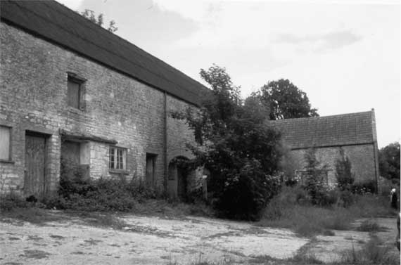
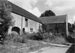

Type of buildings:
Agricultural (redundant)
Listing:
Grade ll and within the Cotswold AONB
Plan and elevation:
Threshing barn with a plain gabled porch, a single threshing floor placed off
centre and attached at right angles to a line of further farm buildings which
2 storied and single pile
Summary of the probable main building
history:
At least two structures 16th Century linked by other structures and altered in
the early 19th Century

The farm buildings viewed from the south west
Construction:
The buildings form a line of four attached structures running south-west to north-east
consisting of, in their last known agricultural usage, milking parlour, cart shed,
calf pens and threshing barn. The threshing barn at the north-east end forms a
cross-wing at right angles to the other buildings. The entire complex is built
into a slope so that the ground to the rear of the structures is at first floor
level.
(A) The barn.
The main structure is of rubble stone with fine dressed quoins. The high porch
to the east is gabled, built from dressed stone, butt jointed to the main structure
and off-centred but in line with the smaller west door. There are three air vents
in the south bay and two only in the north bay as the west wall of this bay is
in fact the gable end of the calf pen structure against which the barn has been
butted; an interconnecting doorway has been inserted. There is a pitching hole
in the north gable of the barn. Internally, the floor of the northern section
of the barn has been raised. It is of concrete and now houses a pit for a former
grain silo. The barn is open to the roof in this area. The section to the south
is largely walled in with timber but contains what is understood to be a grain
bin. There are lamp recesses to the right of the west door and to the left of
the east porch, the latter showing signs of burning. Opposite, to the right of
the porch, there are tally marks, some at wagon height, scratched into the dressed
stone. Roof timbers consist of principal rafters bolted to tie beams, collars,
purlins, and a diagonally set ridge piece with yokes. The roof is pitched and
tiled although the roof angle of about 50% points to a possible original covering
of stone slates.
B) Calf pen building:
Called this for convenience as it is presently equipped with low timber partitions
creating pens although the building has apparently performed other functions.
There is, for instance, a hole to carry a shaft above the east ground floor window;
the shaft being driven by an engine and used to power cutters for the preparation
of cattle feed. The roof is pitched and is at the same level as its western neighbours;
the whole, indeed, being covered by a common corrugated iron roofing over relatively
modern roof timbers. Nevertheless, there is an owl hole/ventilator in the apex
of each gable. The gable, which forms the west wall of the barn, shows clear signs
of the roof having being reduced in height, cutting away the upper part of the
owl hole/ventilator. The walls are of rubble stone. The front or south wall is
battered being about 73cms thick at ground floor level (measured through the window)
and about 50cms thick at first floor level. There are recesses for lamps inside
to the left of the entry and on the west gable wall. On the first floor of the
same wall there is a two-centred arched window with a chamfered stone surround.
The window is blocked and the sill has been removed. On the ground floor there
are two rectangular windows, both being insertions; the eastern window immediately
adjacent to the barn appears formerly to have been an entry (evidenced by the
straight joints visible on the inside wall) whereas the western window may have
replaced another arched window from the evidence of the patching up in the surrounding
walling. Internally, the ceiling is supported by massive waney edge wooden beams,
some even set longitudinally. These are later insertions as there is evidence
of earlier (and higher) ceiling levels including at least one stone corbel set
into the west gable wall on the present first floor. Externally, there are the
remains of a flight of stone steps giving access to a loading door in the cart
shed. These steps were not tied into the wall and consisted of pennant stones
so were a later 19th Century addition to the structure.
C) Cart shed:
Purpose built. Consisting of three large arched openings and one smaller arched
opening at the eastern end of the structure. The front (south) wall thickness
is about 64cms. The first floor is pierced by the loading door and two vents.
This floor believed to have been a granary. The structure is bonded into the calf
pen building to the east where the rubble walling is slightly more rough with
different pointing.
D) The milking parlour:
Formerly believed to have been stables although the original purpose of the structure
is not known. An internal inspection was not possible on this survey but the north
wall (built into the slope) is understood to be about 80cms thick. Externally,
the building has heavy quoins on its western end at ground floor level. Possibly
the first floor was added when the cart shed was built. To the east the structure
is bonded into the cart shed. There are four entries, three of them inserted;
the central entry with dressed stone in the jamb is probably the original.
The surveyed buildings form part of a farm complex, including the former farmhouse, two cottages and other structures in close proximity, which were not surveyed.
Date & development:
The surveyed buildings are of four building phases, three in the long range (the
milking parlour, cart shed and calf pen building) with the fourth (the barn) in
the east cross wing. The Greenwood map of 1822 shows what appears to be the milking
parlour and the calf pen building only. The Tithe Map of 1840 shows the range
of all four buildings. It then appears that the cart shed and barn were built
sometime between 1822-1840 to link the other two buildings and create a long range.
It was probably at this stage that a first floor was added to the milking parlour
and the calf pen building reduced in height to create a common roof level for
all four structures. The plan of the barn with the threshing floor placed off
centre is normally associated with mechanised threshing, that is post about 1780
although in other ways it has an old fashioned look with a plain gabled porch
roof rather than the hipped roof more common by around 1800. The age of the milking
parlour building is a matter for speculation, not being surveyed internally, but
its evident former single storey, single pile plan and rear wall thickness (albeit
built into the slope) indicates considerable age. The calf pen structure possesses
a medieval two-centred arched window at first floor level (with the possibility
of a similar one previously in the ground floor). This may be a late 18th Century
insertion as a decorative feature (there is some evidence of Gothick features
in the nearby farmhouse and cottage structures). Nevertheless, the wall thickness
at front ground floor level and the battered nature of that wall indicate an early
building, at least of the late 16th Century. The function of both of the old buildings
is a matter of speculation but presumably connected with large scale sheep rearing,
such as the storage of fleeces.
References:
- Cartularies of Bath Priory, Somerset Record Society, Vol.7 1893
- B.M. Willmott Dobbie An English Rural Community, Bath University Press, 1969
- Greenwood Map 1822 & the Tithe Map 1840, Somerset Record Office
Reference Pictures
 |
||
| Buildings viewed from the south east | Farm buildings viewed from the south west | The Barn - East Elevation |
| Farm buildings - The “medieval” window |
Survey Drawings
| Ground Plan | Southeast Elevation | The barn - section |